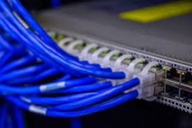

How to Set up a New Modem and Router
Step 1: Locate the Modem and the Router given to you or purchased by you, (The Modem has a TV cable
port on it, the router does NOT)
Step 2: Find a cable and a cable port in your house, like in the picture shown below
Step 3: Screw in the cable to both the port and the port on the modem, as well as plugging in the power
cable to the modem
Step 4: Take the colored ethernet cord and plug it both into the router and into the modem to connect
them.
Step 5: Turn on the power for both the modem and router and wait for the lights to become solid
Step 6: If the lights are solid, your network has been established, just follow your ISP’s instructions on how
to customize it!
Computer Setup
How to Set up a New Computer
Step 1: Connect the computer to a power source and click the on button
Step 2: The computer should boot up and bring you to a screen asking what your name is, and what you
want to name the computer, name it whatever you'd like, just remember it though!
Step 3: Next, the computer should ask if you want to join a network, like your home wifi that you set up. If
you would like to connect to it, simply click on it, enter the password and click continue.
Step 4: The computer may ask for some more information, just follow it as instructed (language, keyboard
type, etc.)
Step 5: Your computer should now be set up, if you have any questions, refer to the FAQ